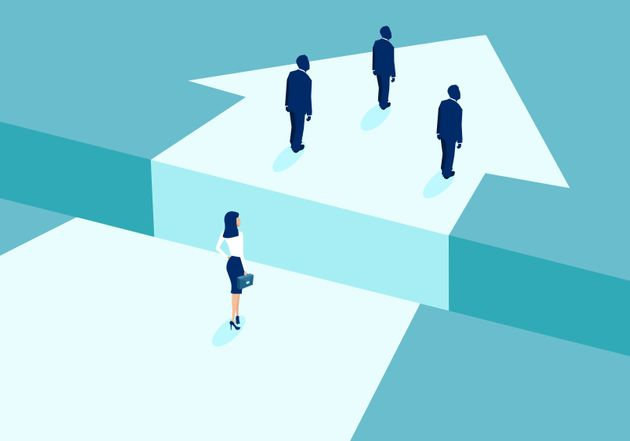
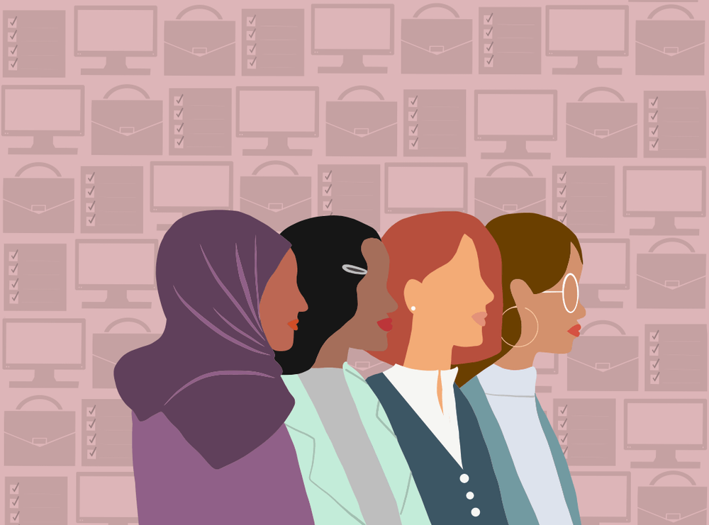

Evidences
- 10 Causes of Gender Inequality
- Uneven access to education
- Lack of employment equality 
- Job segregation
- Lack of legal Protections
- Lack of bodily autonomy
- Poor medical care
- Lack of Religious Freedom 
- Lack of Politcal representation
- Racism
- Societal mindsets
Over the years, the world has gotten closer to achieving gender equality. There is better representation of women in politics, more economic opportunities, and better healthcare in many places of the world. However, the World Economic Forum estimates it will take another century before true gender equality becomes a reality. What drives the gap between genders? Here are 10 causes of gender inequality:
Around the world, women still have less access to education than men. ¼ of young women between 15-24 will not finish primary school. That group makes up 58% of the people not completing that basic education. Of all the illiterate people in the world, ⅔ are women. When girls are not educated on the same level as boys, it has a huge effect on their future and the kinds of opportunities they’ll get.
Only 6 countries in the world give women the same legal work rights as men. In fact, most economies give women only ¾ the rights of men. Studies show that if employment became a more even playing field, it has a positive domino effect on other areas prone to gender inequality.

One of the causes for gender inequality within employment is the division of jobs. In most societies, there’s an inherent belief that men are simply better equipped to handle certain jobs. Most of the time, those are the jobs that pay the best. This discrimination results in lower income for women. Women also take on the primary responsibility for unpaid labor, so even as they participate in the paid workforce, they have extra work that never gets recognized financially.
According to research from the World Bank, over one billion women don’t have legal protection against domestic sexual violence or domestic economic violence. Both have a significant impact on women’s ability to thrive and live in freedom. In many countries, there’s also a lack of legal protections against harassment in the workplace, at school, and in public. These places become unsafe and without protection, women frequently have to make decisions that compromise and limit their goals.
Many women around the world do not have authority over their own bodies or when they become parents. Accessing birth control is frequently very difficult. According to the World Health Organization, over 200 million women who don’t want to get pregnant are not using contraception. There are various reasons for this such as a lack of options, limited access, and cultural/religious opposition. On a global scale, about 40% of pregnancies are not planned and while 50% of them do end in abortion, 38% result in births. These mothers often become financially dependent on another person or the state, losing their freedom.
In addition to limited access to contraception, women overall receive lower-quality medical care than men. This is linked to other gender inequality reasons such as a lack of education and job opportunities, which results in more women being in poverty. They are less likely to be able to afford good healthcare. There’s also been less research into diseases that affect women more than men, such as autoimmune disorders and chronic pain conditions. Many women also experience discrimination and dismissal from their doctors, broadening the gender gap in healthcare quality.
When religious freedom is attacked, women suffer the most. According to the World Economic Forum, when extremist ideologies (such as ISIS) come into a community and restrict religious freedom, gender inequality gets worse. In a study performed by Georgetown University and Brigham Young University, researchers were also able to connect religious intolerance with women’s ability to participate in the economy. When there’s more religious freedom, an economy becomes more stable thanks to women’s participation.
Of all national parliaments at the beginning of 2019, only 24.3% of seats were filled by women. As of June of 2019, 11 Heads of State were women. Despite progress in this area over the years, women are still grossly underrepresented in government and the political process. This means that certain issues that female politicians tend to bring up – such as parental leave and childcare, pensions, gender equality laws and gender-based violence – are often neglected.
It would be impossible to talk about gender inequality without talking about racism. It affects what jobs women of color are able to get and how much they’re paid, as well as how they are viewed by legal and healthcare systems. Gender inequality and racism have been closely-linked for a long time. According to Sally Kitch, a professor and author, European settlers in Virginia decided what work could be taxed based on the race of the woman performing the work. African women’s work was “labor,” so it was taxable, while work performed by English women was “domestic” and not taxable. The pay gaps between white women and women of color continues that legacy of discrimination and contributes to gender inequality.
It’s less tangible than some of the other causes on this list, but the overall mindset of a society has a significant impact on gender inequality. How society determines the differences and value of men vs. women plays a starring role in every arena, whether it’s employment or the legal system or healthcare. Beliefs about gender run deep and even though progress can be made through laws and structural changes, there’s often a pushback following times of major change. It’s also common for everyone (men and women) to ignore other areas of gender inequality when there’s progress, such as better representation for women in leadership. These types of mindsets prop up gender inequality and delay significant change.